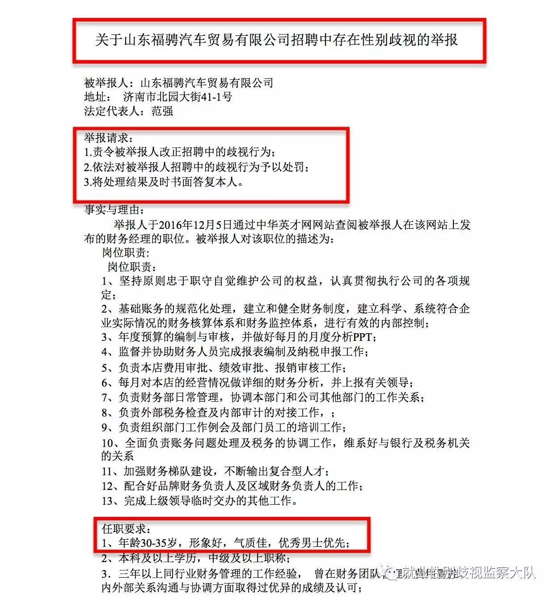
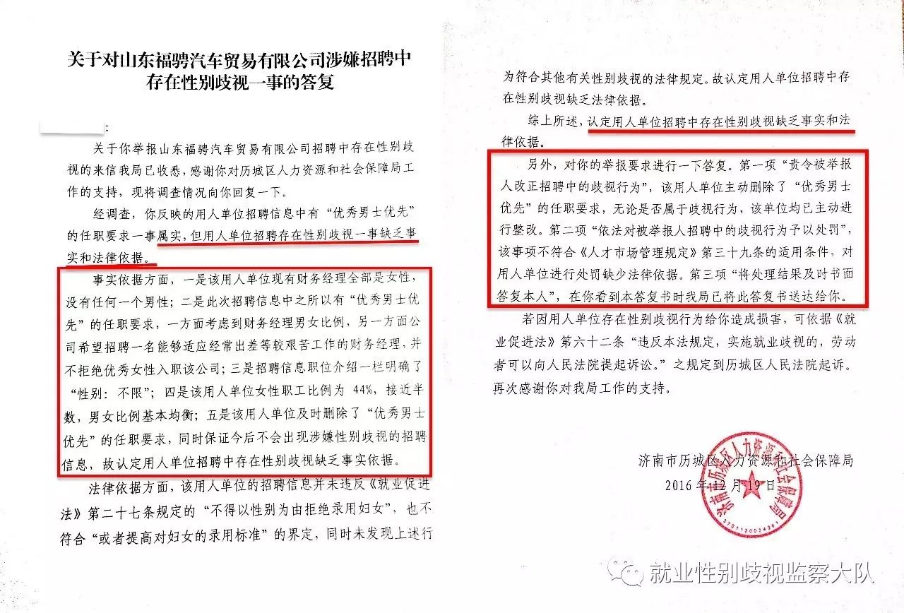
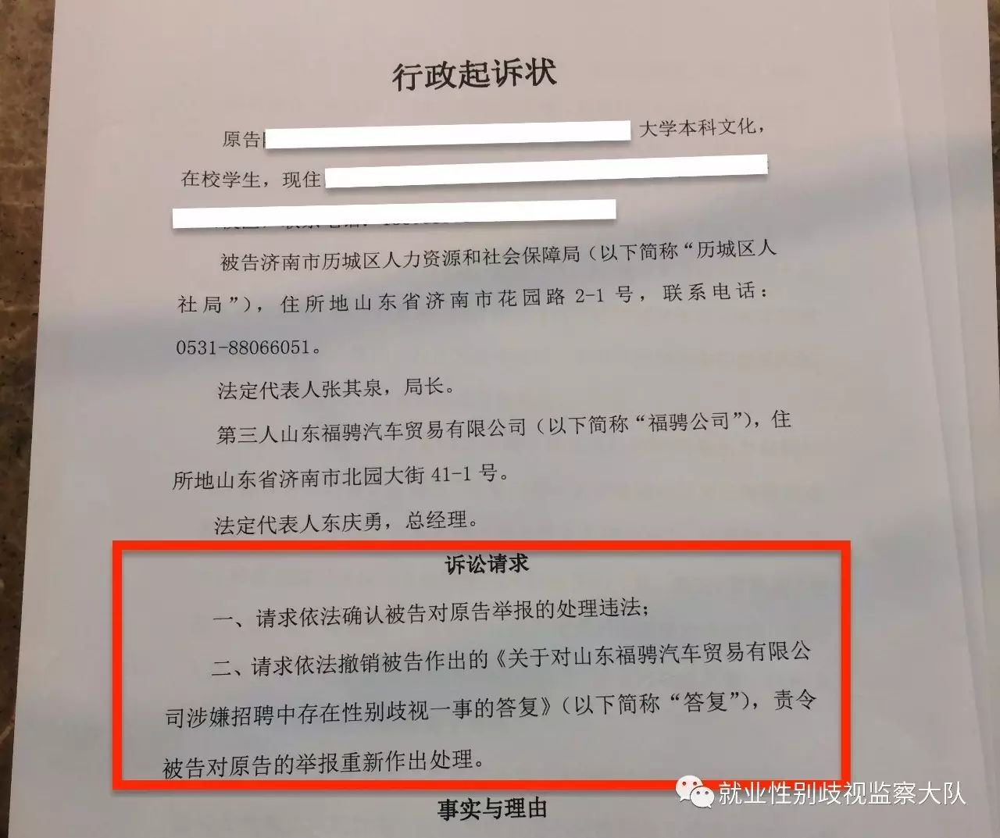
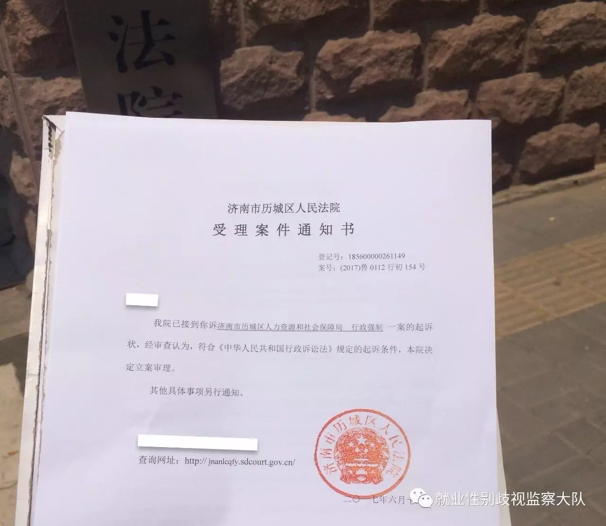

山东省就业性别歧视诉讼第一案昨日立案！
点击关注，掌握更多就业性别歧视时事
山东省性别歧视诉讼第一案昨日立案！
2017年6月16日上午九点三十，山东省济南市高校应届毕业生夏南（化名）带着起诉状来到了济南市历城区人民法院，对济南市历城区人力资源和社会保障局（简称“历城区人社局”）进行起诉。看着前面长长的队伍，夏南此刻不禁回想起自己会出现在这的原因。

夏南在历城区法院门口
人社局：“优秀男士优先”要求属实，但性别歧视缺乏依据
2016年12月8日，夏南向历城区人社局寄出了《关于山东福骋汽车贸易有限公司招聘中存在性别歧视的举报》。就在前几日，夏南在中华英才网上看到山东福骋汽车贸易有限公司（简称“福骋公司”）发布的财务经理一职的任职要求，第一条就是“年龄30-35岁，形象好，气质佳，优秀男士优先”。夏南认为男士优先即同等条件下录用男性不录用女性，该职位并不是国家规定的不适合妇女的岗位，却以性别为由，提高了对妇女的录用标准，这属于性别歧视。当天，夏南向历城区人社局举报该福骋公司招聘中存在性别歧视的行为，希望可以对该企业予以处罚，保障劳动者的合法权益。

夏南寄出的举报信
2016年12月19日，历城区人社局给予了书面回复。该回复从事实依据和法律依据给予了回复，认为“用人单位招聘信息中有'优秀男士优先'的任职要求一事属实，但用人单位招聘存在性别歧视一事缺乏事实和法律依据”。
理由有以下五点
1、福骋公司现有财务经理全部是女性；
2、希望招聘一名能够适应经常出差等较艰苦工作的财务经理，并不拒绝优秀女性入职该公司；
3、招聘信息职位介绍一栏明确了“性别：不限”；
4、福骋公司单位女性职工比例为44%，接近一半；
5、福骋公司及时删除了“优秀男士优先”的任职要求，同时保证今后不会出现涉嫌性别歧视的招聘信息。因此，该公司的行为没有违反“不得以性别为由拒绝录用妇女或者提高对妇女的录用标准”的规定。

历城区人社局给予的回复
错误认知：“男士优先”不是性别歧视
夏南对历城区人社局的回复理由有不一样的看法。
理由1、4说明了福骋公司的招聘性别不限，公司女性员工比例较高，这与差别录用不同性别员工没有关系，并不能掩盖福骋公司优先录用男性，提高女性录用标准的事实。
理由2能证明两点：第一，被告和第三人认为女性不能适应较艰苦的工作；第二，男性是“优先”，女性是“不拒绝”，如果两名同样优秀的应聘者前来求职，福骋公司肯定是录取男性不录取女性。两者很明显不是一样的录用标准，女性的录用标准高于男性。
理由3：“性别：不限”是该网站固定设置，而用人单位自主填写了“优秀男士优先”的任职要求，恰好反应了该公司有性别歧视倾向。
理由5：福骋公司删除任职要求的行为，并不能说明该公司没有违法，只能说明该公司进行了更正、修改。“保证今后不会出现涉嫌性别歧视的招聘信息”，已经说明该公司承认此岗位的招聘是性别歧视。

行政起诉状
人社局负有劳动监察职能的行政机关，是劳动就业相关法律的监督者和执行者，是所有用人单位的标杆，理应对平等就业有正确的认识。
而“男士优先”的招聘要求没有提高妇女的录用标准，不属于性别歧视的错误处理，不仅没有起到改变劳动就业领域性别歧视问题，反而严重打击了女性求职者的积极性，对整个劳动人才市场起到非常负面的示范作用。
起诉人社局，当场立案！
“立案成功了，没有想到会如此顺利！”夏南拿着受理案例通知书兴奋地说。“在法院立案的过程中，窗口的接待都是女性，非常专业和熟练，所以我不认为女性的工作能力和她的性别有什么关系。我们是用能力在工作的，不是用性别在工作，女性和男性应该享有平等的就业权！”

当场收到的受理案件通知书
夏南：希望人社局、公众可以展开更多讨论
我逐渐认识到性别不应该成为一个人成长发展的障碍，对于女性来说，掌握经济主动权是她能够支撑自我发展的关键环节。因为正值毕业季，听过周围很多同学在找工作的时候遭遇性别歧视。比如银行招聘中男生女生分开笔试，男生录取的分数线要比女生低很多；再比如校园招聘会，递简历的时候企业会拒收女生的简历；走在校园里的时候我收到的招聘简章要求男性本科以上学历，女性硕士以上学历。这些经历，让我越来越关注女性在就业时遭遇的性别歧视。
不论是举报，还是起诉，初衷其实都是希望能推动性别平等，消除就业性别歧视，给女性提供更多的工作机会和选择权。我希望可以通过处理这些歧视性的招聘，改正用人单位的歧视行为，向整个社会传达男女平等的正能量。同时，也希望人社局、公众可以有更多的讨论，发展如此迅速的社会，就业性别歧视是以哪些新形式出现了？我们的认知是否跟得上？相关部门应该怎么处理就业性别歧视，保障劳动者利益呢？
律师：性别优先即性别歧视
湖南弘一律师事务所王乐律师：“男士优先”是不是性别歧视？《劳动法》第十三条、《妇女权益保护法》第二十二条、《就业促进法》第二十七条都明确规定了“不得以性别为由拒绝录用妇女或者提高对妇女的录用标准”。
“男士优先”就是其他条件一致的情况下，考虑性别因素，录用男性不录用女性，提高了女性录用标准，属性别歧视，为法律所禁止。我认为这次的行政诉讼目的不在于追究被告和第三人的责任，更重要的是让更多的企业和求职者知道，在就业领域随处可见的性别优先也是性别歧视的一种，进而减少、消除就业性别歧视。
将继续追踪此案进展，请继续关注。
欲采访当事人、律师，请于公号后台留言